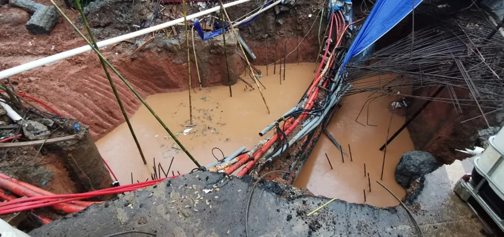

Dewatering Services
Dewatering is the work of lowering the groundwater table during construction so the excavation stays dry and stable. Without it, water enters the excavation, the base softens, and the substructure works below cannot be executed properly.
This is not standalone work. Dewatering almost always runs alongside earth retention — the wall holds the soil, dewatering holds the water. The two must be planned together, not in sequence.

How It Works
Lower it, then hold itDeep wellss are bored around the excavation and fitted with submersible pumps. These wells lower the water table across the whole area, rather than merely removing water that has already entered.
The water level is drawn down in stages until it sits below the excavation base — not all at once, so the surrounding ground does not settle abruptly.
Water that still seeps into the excavation collects in a sump pit and is pumped out. This complements the deep wells; it does not replace them.
Pumps run continuously through the substructure works. Stop too early and the water rises again before the structure is strong enough to resist it.
Applied Example
AIS Tunnel, JakartaOn the Australian Independent School tunnel works, the groundwater table sat at elevation +7.500 while the excavation base lay well below it. The method statement called for drawing the water down to around +1.000 to +1.500 — one to one and a half metres below the excavation base.
Two deep wells with submersible pumps were installed for this, together with two to four surface pumps and a sump pit keeping the water from rising again while excavation and structural works proceeded.
Discuss your requirements
Not sure which foundation method suits your site? Just describe the conditions — our engineering team is glad to help, with no obligation.
WhatsApp: +62 811-902-590Saturday 10:00–12:00
Closed on Sundays and public holidays